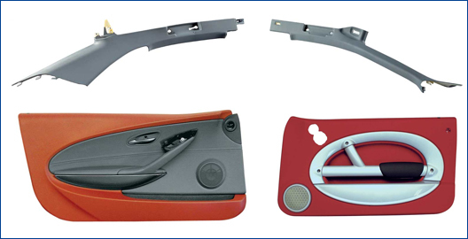

Ýlyaz Ýdrizoðlu
Makine Yük. Müh.
www.ilyazidrizoglu.com
2011, Bursa
Otomotiv endüstrisinde maliyet azaltma rekabeti, kalýcý inovasyon ve geliþmelere yol açmaktadýr. Plastik parça ve kalýp üreticileri iþlem sayýsýný, farklý metotlarý birleþtirerek azaltmaya çalýþmaktadýr. Taþýtlarýn iç mekanlarýnda plastik üzeri kumaþ kaplama iþlemi enjeksiyon parça baskýsýndan sonra birçok ikincil iþlemi içerdiði için maliyet ve sürdürülebilir kalitedeki verimsizlik, tekstil ürünleri ile plastik malzemeleri tek aþamada kaynaþtýrma yönündeki Ar-Ge çalýþmalarýný hýzlandýrmýþtýr. Özel yapým otomasyonlar da üretim biriminin verimliliðini arttýrmaktadýr. Rekabeti azaltma çabalarý enjeksiyon makine üreticileri, kalýp üreticileri ve otomotiv parça tedarikçileri arasýnda ortak proje çalýþmalarýnýn yürütülmesine neden olmuþtur.
Þekil 1. ve Þekil 2.’de geri enjeksiyon yöntemi ile üretilebilecek ürünlerden ve üretilmiþ ürünlerden bazýlarý gösterilmiþtir.

Þekil 1. Geri enjeksiyon yöntemiyle üretilebilecek ürünler (Kaynak: tecomelt technology, ENGEL) |
Geri enjeksiyon yöntemiyle üretimle ilgili örnekler;
"Daha az üretim aþamasý, daha yüksek ve sürdürülebilir kaliteye ulaþmaktýr"
"Tek iþlem", kumaþ kaplama iþlemindeki yeni telaffuz edilen kelimedir. Amacý, daha önce yapýþtýrýcýyla kaplama metodu tarafýndan ihtiyaç duyulan zahmetli iþlem aþamalarý olmadan, enjeksiyon kalýplama makinelerindeki gerçek tek sefer iþleminde kaplamasý yapýlmýþ ve kalýplanmýþ parçalar üretmektir.
Otomotiv sektöründe en sürekli trendlerden biri, geliþmiþ karmaþýk tasarýmlarýn durmadan büyüyen önemidir. Aracýn içi, araç üreticisine ürününü rekabette daha önde gösterme þansý verir. Ýþlevsellik, iç tasarýmý feda etmeden herhangi bir aracýn niteliðini vurgular. Araç performansý ile birlikte bu, satýn alma kararýnda önemli bir kýstastýr.
Plastik trim, kullanýþlý ve çalýþtýrmasý kolay olacak þekilde tasarlanmalýdýr. Güvenlik özellikleri (hava yastýðý: parçalara ayrýlmayan, vb.) birleþik olmalý ve iþleyen elementler ve fonksiyonel parçalar aþýnmaya dirençli olmalýdýr. Otomotiv tasarýmcýlarý, her þeyin üstünde, dar yarýçaplar ve keskin geçiþler talep ederler. Ayný zamanda, üreticileri sürekli olarak var olan iþlemleri en iyi þekilde kullanmak ve durmaksýzýn en son teknolojilerden haberdar olmak için zorlarlar.
Daha az üretim aþamasý, daha yüksek ve sürdürülebilir kaliteye ulaþmanýn kilit noktasýdýr. Daha yüksek oranda iþlem entegrasyonu, sýrayla akýþ sürecini kolaylaþtýran ve daha az yer kaplayan üretim aþamalarýný ortaya çýkartýr. Þematik olarak Þekil 3.’de gösterildiði gibi, konvansiyonel laminasyon sürecinde, parçanýn enjeksiyon kalýplamasý, yýkama, yapýþkanýn uygulanmasý, laminasyon ve daha sonra katlama ve kenar kýrpma gibi üretim aþamalarýndan oluþur. Tek sefer iþleminde, kumaþýn geri enjeksiyon iþlemi tek üretim basamaðýnda uygulanýr. Örneðin, film veya kumaþ ya kalýplama çevrimine baþlamadan önce istenen ölçülerde kesilir, ya kalýp içinde istenen ebatlarda kesilir, ya da çevrim tamamlandýktan sonra kalan kenarlar yine robot vasýtasýyla kýrpýlýr. Bazý durumlarda, kalýpta uygulanmayan katlamayý daha sonra uygulamak mümkündür. Daha az sayýdaki zorunlu üretim adýmlarý kalite seviyesini arttýrýr ve hasar ihtimalini azaltýr.
|
Þekil 3. Konvansiyonel kaplama ve tek adým süreçlerinin karþýlaþtýrýlmasý (Kaynak: Peguform) |
Maliyetler:
Kalýp içi eþ zamanlý iþlemler ile iliþkili ilk yatýrým maliyetleri çekingen davranýlmasýna neden olsa bile, yeni kurulup da üretime geçmesi beklenen bir teknolojiye göre, zamanla satýlabilir ve yüksek kaliteli ürünler üretmek için gerekli olan azaltýlmýþ tesis alaný, zaman, malzemeler ve rekabet gücü yüksek olmasý nedeniyle kalýp içi kaplama teknolojilerinin maliyetleri toplamda aþaðý çekmesi gerçekçi bir bekleyiþtir. Pek çok durumda, dikkate deðer olarak kalýp içi kaplama sistemi, genellikle bir boya atölyesi ihtiyacýný ortadan kaldýrýr. Bu, ilave tesis alanýný serbest býrakýr ve ayrýca ulaþým sistemi ve ihtiyaç duyulan süreç içindeki depo alanýný da azaltýr.
Plastik kalýplama ile üretilen otomotiv, telekomünikasyon ve elektronik cihazlarýn çoðunda ikincil iþlem olarak boyama yapýlmasý gerekliliði vardýr. Bu da bir boyama tesisinin kurulmasý ihtiyacýný doðurur. Boyahanede ihtiyaç duyulan geniþ alan, süreçlerin iþleyiþi, otomasyonu, hassasiyeti ve çevreye olabilecek kötü etkilerinin giderilmesi nedeniyle fabrikada kapalý alanýn ortalama %20 ila %30 oranýnda yeri iþgal edeceði bilinir. Kalýp içi kaplama, boyama süresince havadan gelen partikül bulaþmasýna eðimli serbest alanlarý azaltarak ve özellikle boyamada karþýlaþýlan gözeneklilik ve çukur oluþmasý ile ilgili problemleri kaplama malzemesi kullanýlmasý sebebiyle ortadan kaldýrarak hurda seviyesini azaltýr.
Çevre mevzuatý:
Çevre Koruma Hareketi, metal ve plastik kaplama ile ilgilidir. Atmosferdeki uçucu organik bileþenler (volatile organic compounds - VOC) emisyonunu sýnýrlar. Uçucu organik bileþenler (UOB) kurutma çözücülü boyadan buharlaþan karbon bazlý maddeleri içerir ve zehirli olabilir, hoþ olmayan kokuya sahip olabilir veya iklimsel etkilere sahip olabilir. UOB emisyonu ile ilgili mevzuatýn eski üretim yöntemlerinde uyum saðlamasý maliyetlidir. Fakat pek çok kalýp içi kaplama tekniði (çözücülü boyalarýn, açýk kalýp yüzeyinin üzerine spreylendiði kalýp dýþý boyamanýn bazý türleri hariç) uçucu organik bileþen emisyonlarý içermez, bu sebeple uyumun ekstra maliyeti ya da uymamanýn cezalarýndan kaçýnýlabilir. Bu nedenle bu mevzuat, þirketleri su bazlý, toz boya ve kalýp içi tekniklerinin bazýlarýný kapsayan alternatif boyama tekniklerini araþtýrmaya doðru çeken önemli bir faktör olmuþtur. Bu bakýmdan kalýp içi kaplama tekniklerinin geliþimi ve bundan sonra kullanýmýnýn artýrýlmasý çok büyük önem arz etmektedir.
Kalýp içi eþzamanlý iþlemlerin popülaritesi:
Deðiþen müþteri gereksinimleri ve maliyet azaltma sistemleri, polimer iþleme teknolojilerinde þu anki deðiþimleri teþvik ediyor. Özellikle, çok komponentli kalýplama ve kalýp içi kaplama teknikleri, çok fonksiyonlu ve kaplanmýþ ürünlere olan talebin artmasý sebebiyle popülerite kazanýyor.
Tedarikçiler, ikincil iþlemlerle kalýplanmýþ parçalardan ziyade kaplamayý da içeren tüm sistemleri tedarik etmeyi istemektedirler. Bu ekstra kaplamasý da yapýlan iþlemler giriþimcilere sunulabilir. Fakat yeni geliþmekte olan bu iþlem üreticinin, kalite, üretim süresi ve kar kontrolünü kaybetmesine neden olur. Ancak bilgi ve yeteneklerini arttýrarak, imalatçýlar ürünlerini rakiplerininkilerden farklýlaþtýrabilir ve kontrolü elde tutabilir. Eksiksiz bir boya atölyesi ve ikincil iþlemleri sürekli ayný kalitede yapacak sistemi tesis etmek bir imalatçý için çoðu kez imkânsýzdýr. Bu yüzden kalýp içi kaplama teknikleri gerçekçi bir tercih olmaktadýr.
Müþteriler tarafýndan talep edilen kaplama çeþitlilikleri sayýsý da deðiþiyor. Özellikle otomotiv ve cep telefonu endüstrilerinde tüketiciyi bireysel bir kiþilik olarak görmeye doðru bir eðilim vardýr. Müþterilerine iç ve dýþ giydirme ile ürünleri kendi kaplama seçimleriyle kolaylýkla þahsileþtirmeyi saðlayan pek çok bireysel þekillendirme tercihleri istek üzerine mevcuttur. Bu trend, otomotiv endüstrisinde, araba satýþlarýný arttýrmak için bir pazarlama taktiði olarak baþlamasýna raðmen tüketiciler için arabalarý aracýlýðýyla kendi kiþiliklerini ifade etme becerisiyle sonuçlandý ve bu trendin diðer endüstri sektörlerine de yayýlmasý bekleniyor. Bazý kalýp içi iþlem teknikleri, özellikle kalýp içi kumaþ kaplama, bu esnekliðe izin vermekte ve kalýplama aþamalarý arasýndaki renk ve desen tasarýmýnýn deðiþimini, kaplama filmi rulosunun deðiþimi kadar kolay hale getirmektedir.
Sonuç olarak;
Zaman, maliyet ve sürdürülebilir kalite günümüz imalat teknolojilerinde rekabet gücünü artýran en önemli üç etkendir. Uluslararasý projelerde yer almak için ileri düzeyde Ar-Ge faaliyetlerinin yürütülmesine ihtiyaç vardýr. En kýsa süre, en az maliyet ve sürekli ayný kalite istenildiðinde, hemen kalýp üretimi akla gelmektedir. Konvansiyonel kalýplama, karmaþýk parça ve yeni model tasarýmlarýna cevap vermekte yetersiz kalmýþtýr. Özellikle Avrupalý otomotiv iç mekân tasarýmcýlarýnýn taleplerine cevap verebilmek için ileri kalýplama yöntemleri geliþtirilmiþ ve geliþtirilmeye devam edilmektedir. Tek aþama projelerinde baþarýnýn anahtarý; makine tedarikçisi, kalýp imalatçýsý, malzeme üreticisi ve otomotiv tedarikçisi arasýndaki iyi dayanýþmadýr.
Kaynak:
Ýdrizoglu, Ý., 2011. Kalýp Ýçi Kumaþ Kaplama Yüksek Lisans Tezi. Fen Bilimleri Enstitüsü, Uludað Üniversitesi., Bursa.
Not: Bu makale, Kalýp Dünyasý Dergisi Kasým-Aralýk 2011 sayýsýnda yayýnlanmýþtýr.